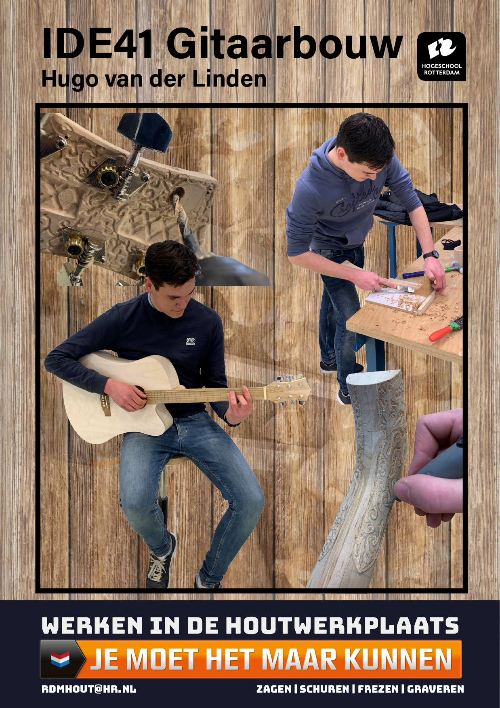

Year 2 · IDE41
Hand-built
guitar.
A wooden guitar made in the workshop from a raw blank through to a playable instrument.
Making music
by making.
This project began with an ambition to build a real guitar rather than only design one. The process took place in the wood workshop and brought together material decisions, hands-on fabrication and patient refinement.
The final instrument became a direct test of the making process: it had to be shaped well, assembled accurately and work as a guitar when finished.
From blank
to instrument.
The build combined sawing, chiselling, milling and engraving. These workshop processes shaped both the playable form and the decorative carved detail in the wood.
Working at full scale made every decision tangible, from the fit of components to the final finish. The result is a personal instrument with the marks of its making left visible.